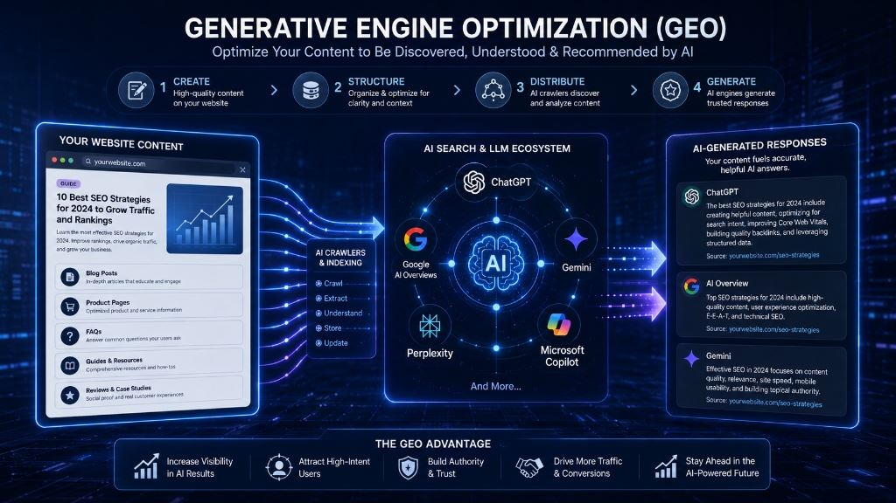
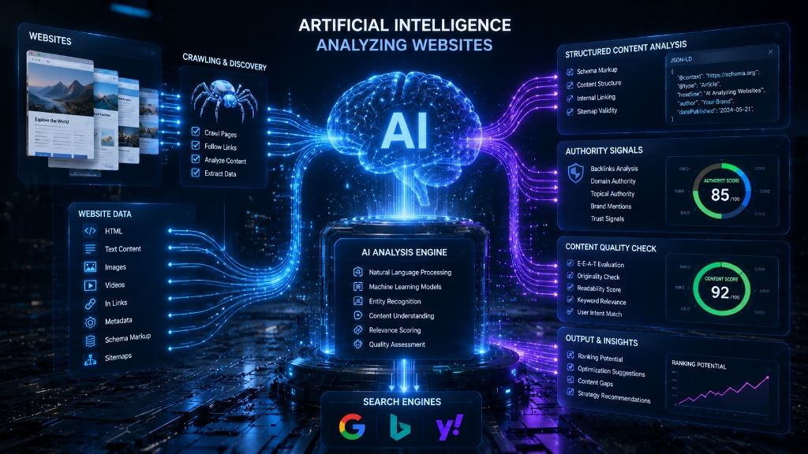
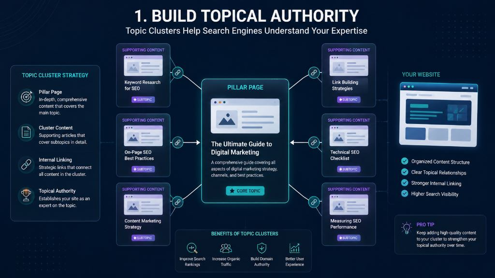
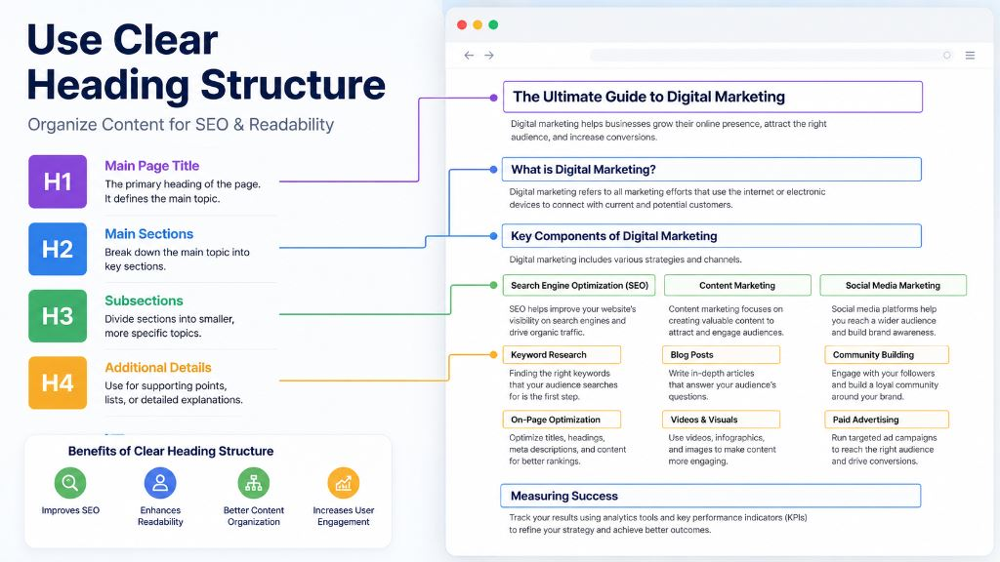
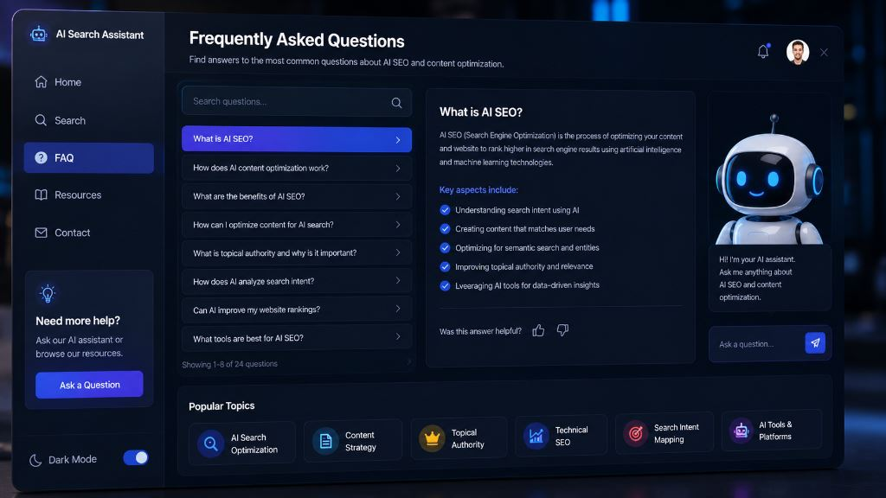
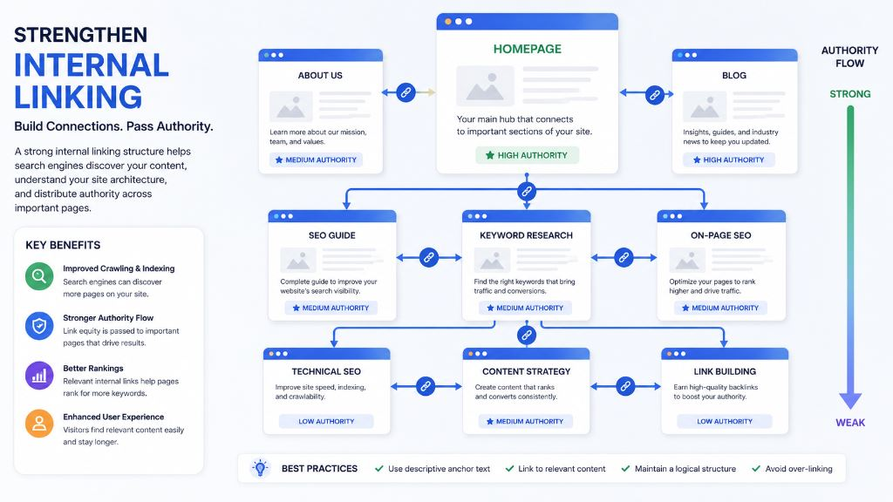
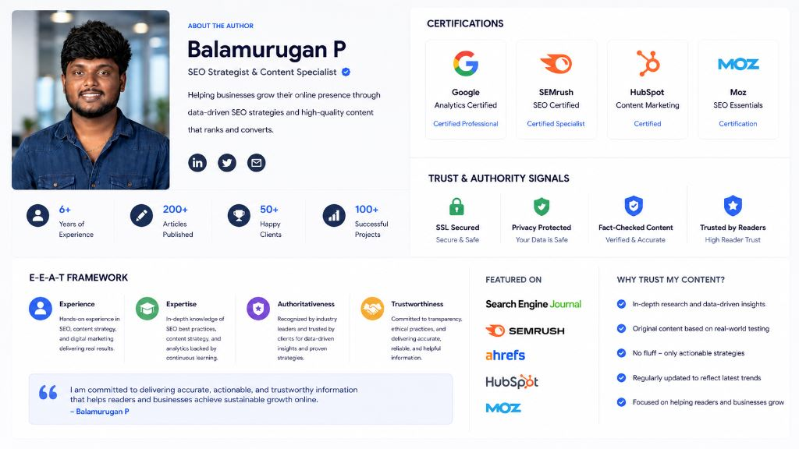
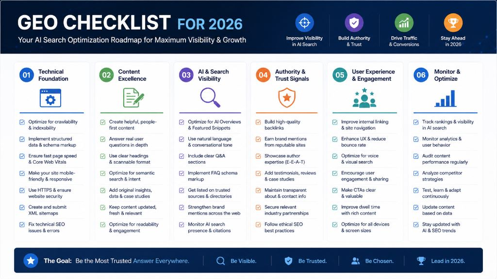
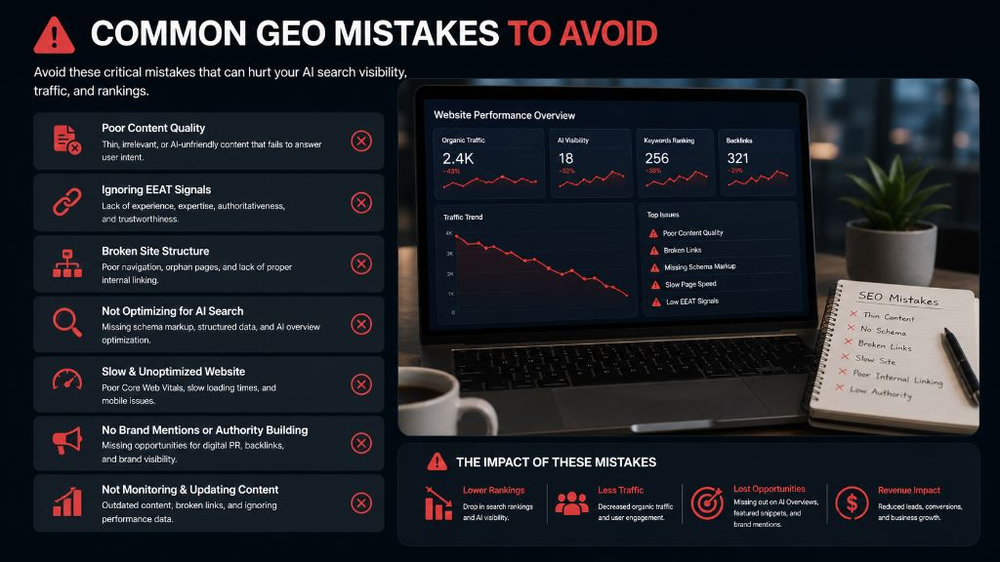

The search landscape is changing rapidly. While Google remains a major source of website traffic, users are increasingly relying on AI-powered platforms such as ChatGPT, Gemini, Perplexity, and Microsoft Copilot to find answers, compare products, research services, and make informed decisions.
Instead of browsing through multiple search results, users can now receive detailed and personalized answers directly from AI assistants. This shift is creating a new opportunity for businesses, marketers, and website owners.
If your content is referenced by AI systems, your brand can gain visibility, authority, traffic, and leads. This is where Generative Engine Optimization (GEO) becomes important.
In this guide, you'll learn how ChatGPT finds information, what factors influence AI visibility, and the best strategies to improve your chances of appearing in AI-generated responses.
Table of Contents
What Is Generative Engine Optimization (GEO)?
Generative Engine Optimization (GEO) is the process of optimizing content so AI-powered search platforms can understand, trust, and reference your information when generating answers.
Traditional SEO focuses on improving rankings on search engine result pages. GEO focuses on increasing visibility inside AI-generated responses.

Figure: How Generative Engine Optimization (GEO) connects your content to AI-generated search responses.
When users ask questions such as:
- What is technical SEO?
- How can I improve website rankings?
- What are the best Google Ads strategies?
- How does internal linking work?
AI systems analyze information from trusted sources and generate answers. GEO helps position your content as one of those trusted sources.
GEO vs SEO Comparison
| Feature Metric | Search Engine Optimization (SEO) | Generative Engine Optimization (GEO) |
|---|---|---|
| Target Objective | Optimizes for search engines (Google, Bing) | Optimizes for AI systems (ChatGPT, Gemini, Perplexity) |
| Primary Focus | Focuses on search rankings | Focuses on citations and mentions |
| User Action Target | Targets clicks and organic traffic | Targets visibility, citations, and authority |
| Optimization Type | Keyword-focused (Title, Meta, Headers) | Context and entity-focused (Meaning, Structure) |
In 2026, businesses should invest in both SEO and GEO to ensure complete digital visibility.
Why Ranking in ChatGPT Matters
Figure: Monitoring brand visibility, organic traffic channels, and business impact from generative search engines.
AI search platforms are becoming part of online behavior. Millions of users now use AI assistants for research, recommendations, and problem-solving.
Benefits of appearing in ChatGPT responses include:
- Increased brand awareness and citation links
- Enhanced credibility as a trusted source
- Higher authority in your industry niche
- More qualified website traffic
- Better lead generation opportunities
- Increased trust among potential customers
Businesses that optimize early for AI search can gain a significant competitive advantage.
How Does ChatGPT Find Information?

Figure: Signals analyzed by AI engines when discovering, crawling, and evaluating website context.
Many people assume AI systems randomly select websites. In reality, AI platforms evaluate several signals when understanding and referencing information.
- Content Quality: Detailed, accurate, and helpful content performs better than thin or low-value articles.
- Website Authority: Websites demonstrating expertise and trustworthiness are more likely to be referenced.
- Structured Information: Content organized with headings, lists, tables, and schema markup is easier for AI systems to understand.
- Topical Authority: Websites that consistently publish content around a specific topic are viewed as more authoritative.
- Brand Recognition: Brands mentioned across websites, communities, and social platforms often build stronger authority signals.
10 Proven Strategies to Rank in ChatGPT
1. Build Topical Authority

Figure: Structuring website content into clusters around a main pillar page establishes topical authority.
Topical authority is one of the most important GEO factors. Instead of publishing unrelated articles, focus on creating topic clusters. For example, support your main topic (SEO) with related topics like Technical SEO, Internal Linking, E-E-A-T, SEO Audits, Schema Markup, and AI SEO. When multiple articles cover related subjects, AI systems gain confidence in your expertise.
2. Create Comprehensive Content
Figure: Creating comprehensive content with structured workflows, topical maps, and clear E-E-A-T checklists optimizes visibility in AI search.
AI systems prefer content that provides complete answers. Include definitions, benefits, step-by-step processes, real examples, case studies, frequently asked questions, and common mistakes. The more useful your content is, the greater the likelihood of being referenced.
3. Use Clear Heading Structure

Figure: A clear heading hierarchy (H1 to H4) guides search engine crawlers and users through content structure.
Organize content logically using H1, H2, H3, and H4 tags. A logical structure improves readability for humans and helps AI systems crawl and understand your content hierarchy.
4. Add FAQ Sections

Figure: Answering common questions directly in FAQ formats aligns with conversational AI search intent.
Question-and-answer content aligns naturally with conversational AI search behavior. Answering questions like "What is GEO?" or "How does ChatGPT choose websites?" directly in your copy improves your chances of appearing in AI responses.
5. Implement Schema Markup
Figure: Structured data and schema templates help AI search bots detect article details, FAQs, and entities without errors.
Schema markup provides structured data that makes it easy for AI systems to parse your website entities. Make sure to use Article, FAQ, Organization, Breadcrumb, and Author Schema.
6. Strengthen Internal Linking

Figure: An optimized internal linking structure distributes domain authority and helps search engines discover contextually related content.
Internal links help AI systems crawl and understand content relationships. Link your articles together (e.g., link this article to SEO Checklist, Internal Linking Strategy, or Technical SEO Audit Guide) to improve crawling, authority flow, and topical relevance.
7. Improve E-E-A-T Signals

Figure: Building E-E-A-T signals via author credentials, verified certifications, experience highlights, and industry features establishes trustworthiness for users and AI search engines.
E-E-A-T (Experience, Expertise, Authoritativeness, Trustworthiness) is critical. Add author profiles, publish case studies, share real experiences, and display credentials. Trust plays a major role in both SEO and GEO rankings.
8. Publish Original Insights
Figure: Presenting original research, campaign data, and proprietary survey results increases citations and references from AI overviews.
AI systems value unique information. Original case studies, campaign results, industry surveys, and proprietary statistics are much more likely to be cited than generic content.
9. Earn Brand Mentions Across the Web
Figure: Earning brand mentions across news sites, marketing blogs, communities, podcasts, and social networks builds global authority for generative search engines.
Brand authority extends beyond your website. Increase mentions through LinkedIn, Medium, guest posting, and digital PR. The stronger your online footprint, the stronger your authority signals.
10. Keep Content Updated
Figure: Maintaining content updates using structured update plans, audit workflows, and performance monitoring preserves AI search rankings.
AI systems prefer current and accurate information. Review and update your statistics, examples, screenshots, and tools regularly. Fresh content improves relevance and trust.
Balamurugan P's GEO Tip
Generative engines rely on clear semantic relationships between words and entities. Use direct, clear language and place direct answers immediately below your headings to help AI scrapers extract your content easily.
GEO Checklist for 2026

Figure: An optimization roadmap covering technical foundation, content excellence, AI visibility, trust signals, user experience, and ongoing optimization.
- Build topical authority
- Create comprehensive content
- Use structured headings
- Add FAQ sections
- Implement schema markup
- Strengthen internal linking
- Improve E-E-A-T
- Publish original insights
- Earn brand mentions
- Update content regularly
Common GEO Mistakes to Avoid

Figure: Critical mistakes like thin content, poor site structures, and unoptimized speed hurt visibility, organic traffic, and rankings.
Avoid thin content, keyword stuffing, duplicate content, poor internal linking, missing author information, and outdated articles. Publishing AI-generated content without human review can also reduce trust and visibility.
Frequently Asked Questions
Yes. AI-generated responses can increase brand awareness and encourage users to visit your website for additional information.
Yes. SEO focuses on improving search engine rankings, while GEO focuses on increasing visibility within AI-generated responses.
Yes. Schema markup provides structured information that helps AI systems understand your content more effectively.
Like SEO, GEO is a long-term strategy. Results depend on content quality, authority, trust signals, and consistency.